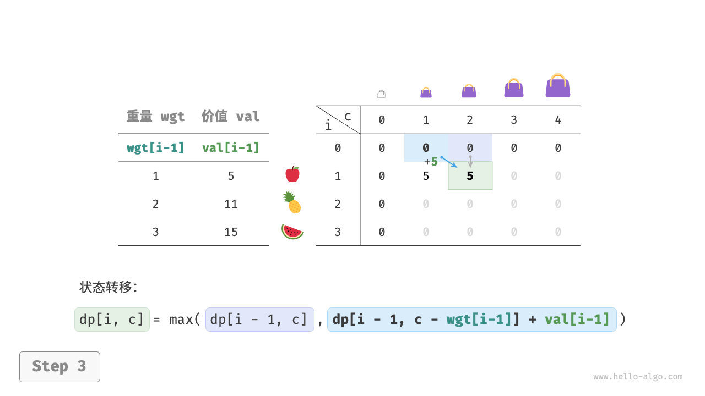
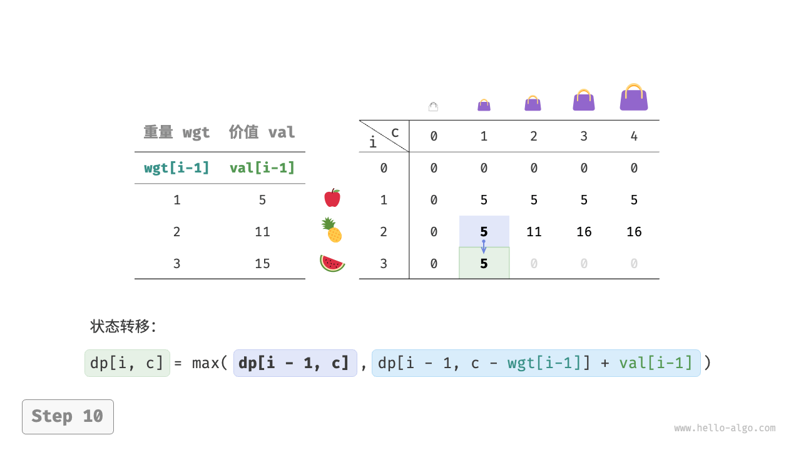
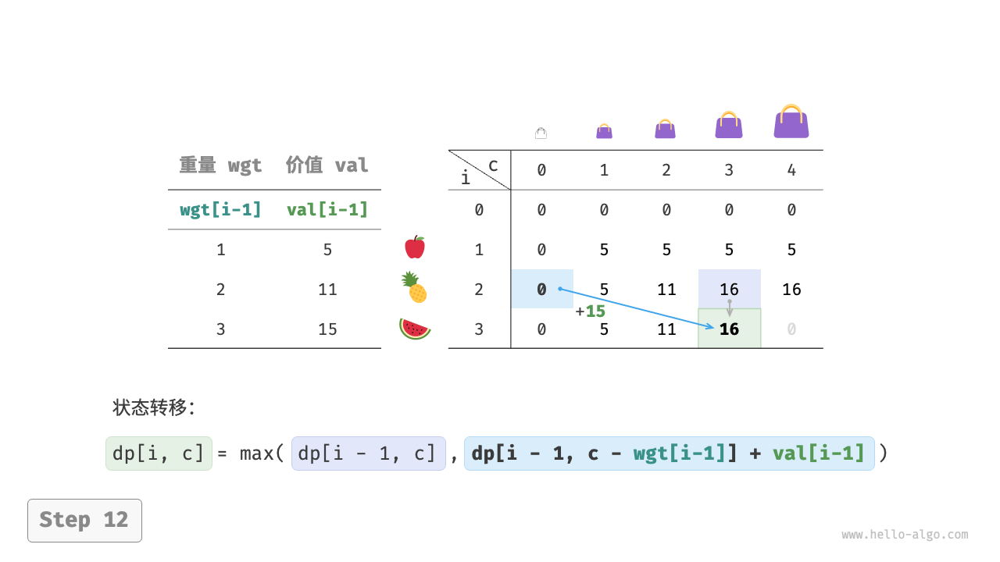
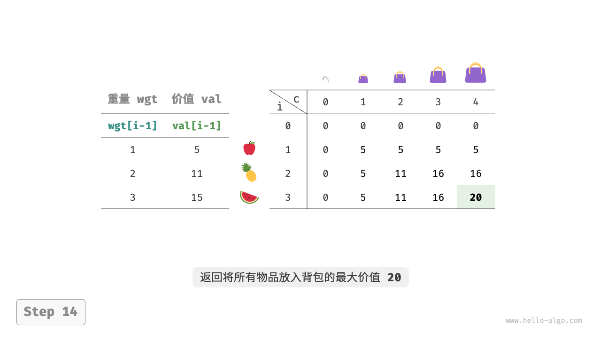
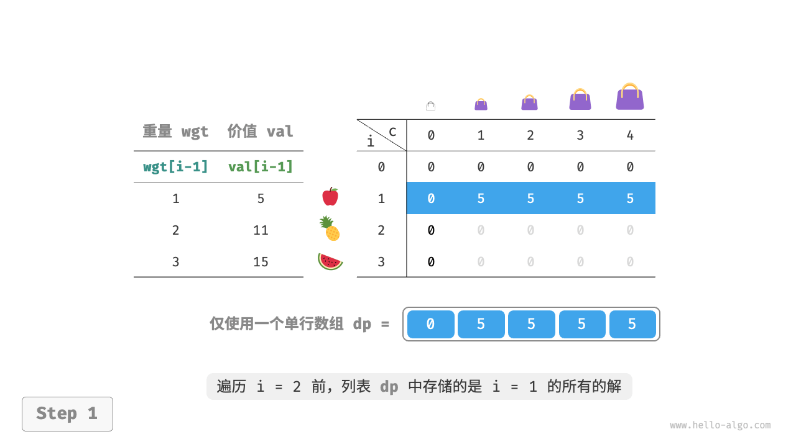
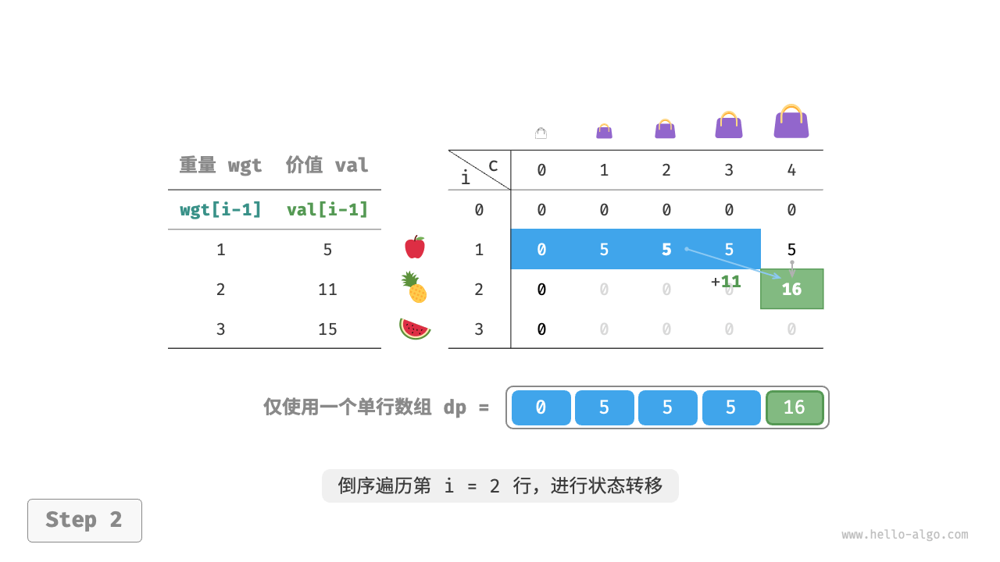
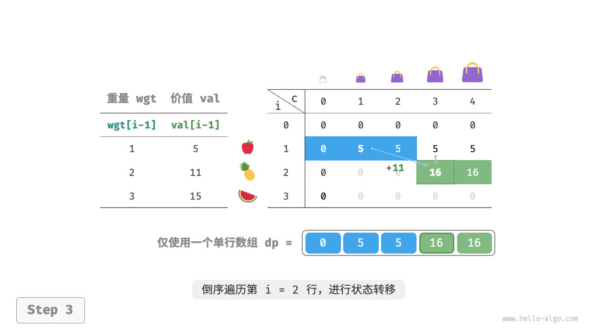
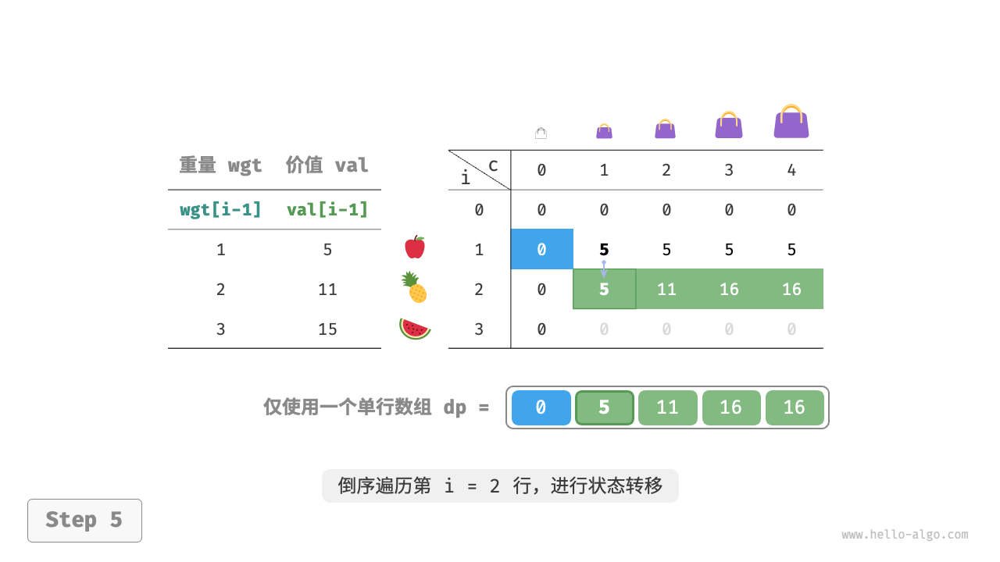

0-1 背包问题
背包问题是一个非常好的动态规划入门题目，是动态规划中最常见的问题形式。其具有很多变种，例如 0-1 背包问题、完全背包问题、多重背包问题等。
在本节中，我们先来求解最常见的 0-1 背包问题。
!!! question
给定 $n$ 个物品，第 $i$ 个物品的重量为 $wgt[i-1]$、价值为 $val[i-1]$ ，和一个容量为 $cap$ 的背包。每个物品只能选择一次，问在限定背包容量下能放入物品的最大价值。
观察下图，由于物品编号 $i$ 从 $1$ 开始计数，数组索引从 $0$ 开始计数，因此物品 $i$ 对应重量 $wgt[i-1]$ 和价值 $val[i-1]$ 。

我们可以将 0-1 背包问题看作一个由 $n$ 轮决策组成的过程，对于每个物体都有不放入和放入两种决策，因此该问题满足决策树模型。
该问题的目标是求解“在限定背包容量下能放入物品的最大价值”，因此较大概率是一个动态规划问题。
第一步：思考每轮的决策，定义状态，从而得到 $dp$ 表
对于每个物品来说，不放入背包，背包容量不变；放入背包，背包容量减小。由此可得状态定义：当前物品编号 $i$ 和剩余背包容量 $c$ ，记为 $[i, c]$ 。
状态 $[i, c]$ 对应的子问题为：前 $i$ 个物品在剩余容量为 $c$ 的背包中的最大价值，记为 $dp[i, c]$ 。
待求解的是 $dp[n, cap]$ ，因此需要一个尺寸为 $(n+1) \times (cap+1)$ 的二维 $dp$ 表。
第二步：找出最优子结构，进而推导出状态转移方程
当我们做出物品 $i$ 的决策后，剩余的是前 $i-1$ 个物品的决策，可分为以下两种情况。
- 不放入物品 $i$ ：背包容量不变，状态变化为 $[i-1, c]$ 。
- 放入物品 $i$ ：背包容量减少 $wgt[i-1]$ ，价值增加 $val[i-1]$ ，状态变化为 $[i-1, c-wgt[i-1]]$ 。
上述分析向我们揭示了本题的最优子结构：最大价值 $dp[i, c]$ 等于不放入物品 $i$ 和放入物品 $i$ 两种方案中价值更大的那一个。由此可推导出状态转移方程：
$$ dp[i, c] = \max(dp[i-1, c], dp[i-1, c - wgt[i-1]] + val[i-1])
$$
需要注意的是，若当前物品重量 $wgt[i - 1]$ 超出剩余背包容量 $c$ ，则只能选择不放入背包。
第三步：确定边界条件和状态转移顺序
当无物品或无剩余背包容量时最大价值为 $0$ ，即首列 $dp[i, 0]$ 和首行 $dp[0, c]$ 都等于 $0$ 。
当前状态 $[i, c]$ 从上方的状态 $[i-1, c]$ 和左上方的状态 $[i-1, c-wgt[i-1]]$ 转移而来，因此通过两层循环正序遍历整个 $dp$ 表即可。
根据以上分析，我们接下来按顺序实现暴力搜索、记忆化搜索、动态规划解法。
方法一：暴力搜索
搜索代码包含以下要素。
- 递归参数：状态 $[i, c]$ 。
- 返回值：子问题的解 $dp[i, c]$ 。
- 终止条件：当物品编号越界 $i = 0$ 或背包剩余容量为 $0$ 时，终止递归并返回价值 $0$ 。
剪枝：若当前物品重量超出背包剩余容量，则只能选择不放入背包。
"Python"
def knapsack_dfs(wgt: list[int], val: list[int], i: int, c: int) -> int: """0-1 背包：暴力搜索""" // 若已选完所有物品或背包无剩余容量，则返回价值 0 if i == 0 or c == 0: return 0 // 若超过背包容量，则只能选择不放入背包 if wgt[i - 1] > c: return knapsack_dfs(wgt, val, i - 1, c) // 计算不放入和放入物品 i 的最大价值 no = knapsack_dfs(wgt, val, i - 1, c) yes = knapsack_dfs(wgt, val, i - 1, c - wgt[i - 1]) + val[i - 1] // 返回两种方案中价值更大的那一个 return max(no, yes)"C++"
/* 0-1 背包：暴力搜索 */ int knapsackDFS(vector<int> &wgt, vector<int> &val, int i, int c) { // 若已选完所有物品或背包无剩余容量，则返回价值 0 if (i == 0 || c == 0) { return 0; } // 若超过背包容量，则只能选择不放入背包 if (wgt[i - 1] > c) { return knapsackDFS(wgt, val, i - 1, c); } // 计算不放入和放入物品 i 的最大价值 int no = knapsackDFS(wgt, val, i - 1, c); int yes = knapsackDFS(wgt, val, i - 1, c - wgt[i - 1]) + val[i - 1]; // 返回两种方案中价值更大的那一个 return max(no, yes); }"Java"
/* 0-1 背包：暴力搜索 */ int knapsackDFS(int[] wgt, int[] val, int i, int c) { // 若已选完所有物品或背包无剩余容量，则返回价值 0 if (i == 0 || c == 0) { return 0; } // 若超过背包容量，则只能选择不放入背包 if (wgt[i - 1] > c) { return knapsackDFS(wgt, val, i - 1, c); } // 计算不放入和放入物品 i 的最大价值 int no = knapsackDFS(wgt, val, i - 1, c); int yes = knapsackDFS(wgt, val, i - 1, c - wgt[i - 1]) + val[i - 1]; // 返回两种方案中价值更大的那一个 return Math.max(no, yes); }
如下图所示，由于每个物品都会产生不选和选两条搜索分支，因此时间复杂度为 $O(2^n)$ 。
观察递归树，容易发现其中存在重叠子问题，例如 $dp[1, 10]$ 等。而当物品较多、背包容量较大，尤其是相同重量的物品较多时，重叠子问题的数量将会大幅增多。
方法二：记忆化搜索
为了保证重叠子问题只被计算一次，我们借助记忆列表 mem 来记录子问题的解，其中 mem[i][c] 对应 $dp[i, c]$ 。
引入记忆化之后，时间复杂度取决于子问题数量，也就是 $O(n \times cap)$ 。实现代码如下：
"Python"
def knapsack_dfs_mem( wgt: list[int], val: list[int], mem: list[list[int]], i: int, c: int ) -> int: """0-1 背包：记忆化搜索""" // 若已选完所有物品或背包无剩余容量，则返回价值 0 if i == 0 or c == 0: return 0 // 若已有记录，则直接返回 if mem[i][c] != -1: return mem[i][c] // 若超过背包容量，则只能选择不放入背包 if wgt[i - 1] > c: return knapsack_dfs_mem(wgt, val, mem, i - 1, c) // 计算不放入和放入物品 i 的最大价值 no = knapsack_dfs_mem(wgt, val, mem, i - 1, c) yes = knapsack_dfs_mem(wgt, val, mem, i - 1, c - wgt[i - 1]) + val[i - 1] // 记录并返回两种方案中价值更大的那一个 mem[i][c] = max(no, yes) return mem[i][c]"C++"
/* 0-1 背包：记忆化搜索 */ int knapsackDFSMem(vector<int> &wgt, vector<int> &val, vector<vector<int>> &mem, int i, int c) { // 若已选完所有物品或背包无剩余容量，则返回价值 0 if (i == 0 || c == 0) { return 0; } // 若已有记录，则直接返回 if (mem[i][c] != -1) { return mem[i][c]; } // 若超过背包容量，则只能选择不放入背包 if (wgt[i - 1] > c) { return knapsackDFSMem(wgt, val, mem, i - 1, c); } // 计算不放入和放入物品 i 的最大价值 int no = knapsackDFSMem(wgt, val, mem, i - 1, c); int yes = knapsackDFSMem(wgt, val, mem, i - 1, c - wgt[i - 1]) + val[i - 1]; // 记录并返回两种方案中价值更大的那一个 mem[i][c] = max(no, yes); return mem[i][c]; }"Java"
/* 0-1 背包：记忆化搜索 */ int knapsackDFSMem(int[] wgt, int[] val, int[][] mem, int i, int c) { // 若已选完所有物品或背包无剩余容量，则返回价值 0 if (i == 0 || c == 0) { return 0; } // 若已有记录，则直接返回 if (mem[i][c] != -1) { return mem[i][c]; } // 若超过背包容量，则只能选择不放入背包 if (wgt[i - 1] > c) { return knapsackDFSMem(wgt, val, mem, i - 1, c); } // 计算不放入和放入物品 i 的最大价值 int no = knapsackDFSMem(wgt, val, mem, i - 1, c); int yes = knapsackDFSMem(wgt, val, mem, i - 1, c - wgt[i - 1]) + val[i - 1]; // 记录并返回两种方案中价值更大的那一个 mem[i][c] = Math.max(no, yes); return mem[i][c]; }
下图展示了在记忆化搜索中被剪掉的搜索分支。
方法三：动态规划
动态规划实质上就是在状态转移中填充 $dp$ 表的过程，代码如下所示：
"Python"
def knapsack_dp(wgt: list[int], val: list[int], cap: int) -> int: """0-1 背包：动态规划""" n = len(wgt) // 初始化 dp 表 dp = [[0] * (cap + 1) for _ in range(n + 1)] // 状态转移 for i in range(1, n + 1): for c in range(1, cap + 1): if wgt[i - 1] > c: // 若超过背包容量，则不选物品 i dp[i][c] = dp[i - 1][c] else: // 不选和选物品 i 这两种方案的较大值 dp[i][c] = max(dp[i - 1][c], dp[i - 1][c - wgt[i - 1]] + val[i - 1]) return dp[n][cap]"C++"
/* 0-1 背包：动态规划 */ int knapsackDP(vector<int> &wgt, vector<int> &val, int cap) { int n = wgt.size(); // 初始化 dp 表 vector<vector<int>> dp(n + 1, vector<int>(cap + 1, 0)); // 状态转移 for (int i = 1; i <= n; i++) { for (int c = 1; c <= cap; c++) { if (wgt[i - 1] > c) { // 若超过背包容量，则不选物品 i dp[i][c] = dp[i - 1][c]; } else { // 不选和选物品 i 这两种方案的较大值 dp[i][c] = max(dp[i - 1][c], dp[i - 1][c - wgt[i - 1]] + val[i - 1]); } } } return dp[n][cap]; }"Java"
/* 0-1 背包：动态规划 */ int knapsackDP(int[] wgt, int[] val, int cap) { int n = wgt.length; // 初始化 dp 表 int[][] dp = new int[n + 1][cap + 1]; // 状态转移 for (int i = 1; i <= n; i++) { for (int c = 1; c <= cap; c++) { if (wgt[i - 1] > c) { // 若超过背包容量，则不选物品 i dp[i][c] = dp[i - 1][c]; } else { // 不选和选物品 i 这两种方案的较大值 dp[i][c] = Math.max(dp[i - 1][c], dp[i - 1][c - wgt[i - 1]] + val[i - 1]); } } } return dp[n][cap]; }
如下图所示，时间复杂度和空间复杂度都由数组 dp 大小决定，即 $O(n \times cap)$ 。
"<1>"
"<2>"
"<3>" 
"<4>"
"<5>"
"<6>"
"<7>"
"<8>"
"<9>"

"<10>" 
"<11>"

"<12>" 
"<13>"
"<14>" 
空间优化
由于每个状态都只与其上一行的状态有关，因此我们可以使用两个数组滚动前进，将空间复杂度从 $O(n^2)$ 降至 $O(n)$ 。
进一步思考，我们能否仅用一个数组实现空间优化呢？观察可知，每个状态都是由正上方或左上方的格子转移过来的。假设只有一个数组，当开始遍历第 $i$ 行时，该数组存储的仍然是第 $i-1$ 行的状态。
- 如果采取正序遍历，那么遍历到 $dp[i, j]$ 时，左上方 $dp[i-1, 1]$ ~ $dp[i-1, j-1]$ 值可能已经被覆盖，此时就无法得到正确的状态转移结果。
- 如果采取倒序遍历，则不会发生覆盖问题，状态转移可以正确进行。
下图展示了在单个数组下从第 $i = 1$ 行转换至第 $i = 2$ 行的过程。请思考正序遍历和倒序遍历的区别。
"<1>" 
"<2>" 
"<3>" 
"<4>"
"<5>" 
"<6>"
在代码实现中，我们仅需将数组 dp 的第一维 $i$ 直接删除，并且把内循环更改为倒序遍历即可：
"Python"
def knapsack_dp_comp(wgt: list[int], val: list[int], cap: int) -> int: """0-1 背包：空间优化后的动态规划""" n = len(wgt) // 初始化 dp 表 dp = [0] * (cap + 1) // 状态转移 for i in range(1, n + 1): // 倒序遍历 for c in range(cap, 0, -1): if wgt[i - 1] > c: // 若超过背包容量，则不选物品 i dp[c] = dp[c] else: // 不选和选物品 i 这两种方案的较大值 dp[c] = max(dp[c], dp[c - wgt[i - 1]] + val[i - 1]) return dp[cap]"C++"
/* 0-1 背包：空间优化后的动态规划 */ int knapsackDPComp(vector<int> &wgt, vector<int> &val, int cap) { int n = wgt.size(); // 初始化 dp 表 vector<int> dp(cap + 1, 0); // 状态转移 for (int i = 1; i <= n; i++) { // 倒序遍历 for (int c = cap; c >= 1; c--) { if (wgt[i - 1] <= c) { // 不选和选物品 i 这两种方案的较大值 dp[c] = max(dp[c], dp[c - wgt[i - 1]] + val[i - 1]); } } } return dp[cap]; }"Java"
/* 0-1 背包：空间优化后的动态规划 */ int knapsackDPComp(int[] wgt, int[] val, int cap) { int n = wgt.length; // 初始化 dp 表 int[] dp = new int[cap + 1]; // 状态转移 for (int i = 1; i <= n; i++) { // 倒序遍历 for (int c = cap; c >= 1; c--) { if (wgt[i - 1] <= c) { // 不选和选物品 i 这两种方案的较大值 dp[c] = Math.max(dp[c], dp[c - wgt[i - 1]] + val[i - 1]); } } } return dp[cap]; }